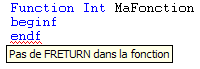

Pour vous aider à développer plus rapidement vos programmes, Xwin compile "à la volée" tous les sources (programmes Diva, traitements de masque ou de dictionnaire, dictionnaires de RecordSql) chargés de votre sous-projet.
Sous réserve d'appartenir au sous-projet courant, tout code source est donc (re)compilé à la volée :
Au moment où il est chargé dans Xwin.
Puis dès qu’une modification le concernant est effectuée.
Les interdépendances sont calculées à la manière habituelle : un source principal dépend de lui-même, de ses Includes et des modules appelés. Lorsqu’un Include est modifié, tous les sources principaux (inclus dans le sous-projet) qui le référencent sont recompilés.
Soulignage des erreurs et des avertissements détectés par les compilations en ligne
Les anomalies sont immédiatement visualisées au niveau du code source par le soulignage des erreurs (couleur rouge par défaut) et des avertissements (couleur bleu par défaut).
Si vous faites stationner la souris quelques instants sur une zone soulignée, une bulle apparaît avec l'explication de l’erreur.

Attention :
Les compilations en ligne sont indépendantes des « vraies » compilations qui restent bien entendu nécessaires pour exécuter les programmes.
Désactiver le soulignage des erreurs de compilations en ligne
Décochez la case "Souligner les erreurs de compilation" dans les options de l'éditeur de texte (volet Saisie assistée). Pour plus d'informations, consultez la rubrique Modification des options et désactivation des fonctions d'assistance au codage.
Modifier les couleurs de soulignage
Vous pouvez modifier les couleurs utilisées pour le soulignage des erreurs et des avertissements (Cf. rubrique Options - Environnement - Police et couleurs).
Pour compiler un source en ligne